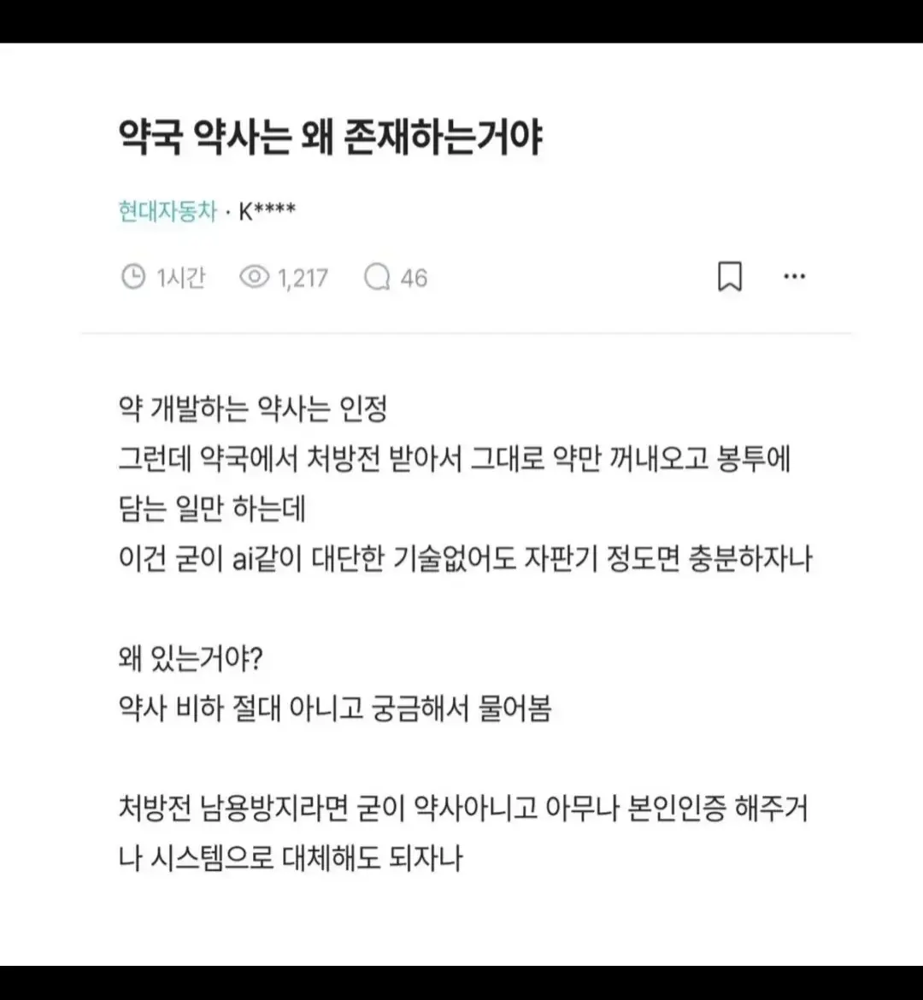

약국 약사는 왜 존재하는거야
댓글
씹새끼들이네
옛날에는 의사 처방 없이도 약판매가 가능했음
그땐 환자 증상에 알맞는 약을 추천하는 약사의 능력이 필요했음
허나 지금은 그게 없어지니 저런 말이 나오는거
솔직히 키오스크로 내 증상 + 진단서 스캔하면 알아서 챡챡챡 나오는게 더 좋을듯. 신분증 + qr이나 바코드 스캔하면 그것도 쉬운거 아닌가싶음
처방전 검수, 약제업무, 보호자 제공업무, 복약지도 전부 AI로 대체쌉가능, 현재기술로도 쌉가능, 자판기가 장점 훨씬 많음. 약사는 제약회사나 연구쪽 가야 국가적으로도 이득아님? 점빵에서 편하게 럭키편돌이해서 돈버는게 좋으니까 아득바득 우기면서 우리가 하는일이 얼마나 많은데요? 흥 이러고있는거지 ㅋㅋ 뭔 말같지도 않은소리들을 하고있는지 모르겠네 ㅋㅋㅋㅋ
주변 병원들이랑 전산공유하면 다 해결이긴함 ㅋㅋ 약재발주도 자동으로 하면되고 자동화가 안될이유가 전혀없음. 자판기래서 다들 음료자판기만 생각하는듯. 뒤에 약재창고 넣고, 창구에서 주문하면 처방전에따라 자동으로 포장되서 나오는게 어려운 프로세스가 아닐텐데 ㅋㅋ
전산공유가 쉽게 되는거면 가능하겠지.....그거 부터가 쉽지않음
그거 면허 없으면 약장이들 급방긋 아닌가
책임질 사람!!!
카피약어쩌고 드립은 좀 우습네... ai특기분야잖아
사실 그렇긴해. AI는 필요 없고 그냥 자판기로도 대체 가능한게 아닌가 싶음. 근데 AI가 있는 시점에 조금만 있으면 대부분의 사무직도 대체 가능할거 같으니까 그때까지 버텨도 그러려니함.
이제 곧 이커머스 약 배송 시작할걸? 관련 법안도 마련하려고 시동중이고.. 시대의 흐름이긴한듯
사실 약에 대한 정보는 이미 다 등록된 내용들이잖아
같이 먹으면 안되는 약 언제 먹는지 어떻게 먹는지 다 나와있어서 AI 시키면 존나 잘하긴 할거임
ㄹㅇ 특별하게 약사하고 상담하고 약 구매해 본 경험 있는 사람 있음??
아주 복잡하고 섬세한거면 그럴만한 사람들은 갈 수 있는 곳이나 화상으로 상담하는 시스템을 추가해주면 되잖아
약사협회 파워 ㅈㄴ쎄서 ai자판기로 절대못바꿈
복약지도
요즘은 조제도 자판기가 함.
약국 약사 하는 일이라고는 이제 약관리랑 복약지도 이거 두개아님?
복약지도 한다고 문제 생겼을때 책임지는 것도 아니고, 공인중개사 수준임.
”약종상“
간혹 가는 약국 약사님은 친절하다못해 투머치토커라 약에 관한 정보 + 약 먹는 원인에 대한 생활지도까지 함 ㄷㄷ
근데 가끔 심심한 약사분들에게 뭐 물어보면 진짜 친절하게 설명해주심
다른건 다 ㄱㅊ
감기약 달랬더니 한약 준 씹새끼는 용서못함
감기약 걸렸을때 갈근탕 진짜 효과 직방인데
그럼 니가 한방제재 아닌 감기약 달라고해야지 ㅋㅋ 니 무지를 왜 다른사람욕으로 승화하누
복약지도하는게 약사라매 그럼 "이건 한약성분인데 효과가 좋습니다~" 라고 하면서 팔아야하는거 아님?
제약사에서 팔아달라고 로비 받고 일부 약 위주로 파는약사들이 있는것같은데 그걸 소비자의 무지로 봐야함? 약사의 직업윤리 부재로 봐하는거 아님?
아니 그럼 약사가 뭐팔아야함 ?
a 주면 a 제약사 리베이트고
b 주면 b 제약사 리베이트고
c 주면 c 제약사리베이트고
양약주면 양약리베이트고
생약주면 생약리베이트고
한약주면 한약리베이트고
리베이트준다는건 니 뇌망상아님 ?
리베이트는 전문약 처방하는 의사한테나있는거고
제약회사가 약사한테 왜 리베이트를하냐고 씨빨 도대체 왜 ㅋㅋㅋㅋㅋㅋㅋㅋ
니가 감기약달라할때
보통 종합감기+소염진통제+갈근탕 이거 주는게 국룰인데
사업자인 약사맘대로 주는거지 종근당꺼주면 지랄
녹십자꺼 줘도 지랄
듣보잡꺼줘도 리베이트지랄
도대체 어떻게 줘야 로비안받는사람이되고 만족함?
얘 왜케 화남? 존나 긁혔네
감기 걸렸을 때 병원 처방약 중에서 한약 존나 많은데 모르고 먹으면 걍 약인갑다~하고 쳐먹을거면서ㅋㅋ
검증된 약이니까 좀 걍 먹어라 니가 약사임?
약사가 단순히 의사 하청은 아닌거 같음.
처방이 너무 독하면 약사가 "진짜 이렇게 받았어요? 하.." 하고 돌팔이 돌려서 귀뜸해주는곳도 있음.
근처 한약사가 하는 약국 싸가지없고 또 근처 늙은이가 하는 곳은 더 싸가지 없고 딴 곳은 약달라그러면 자꾸 건강식품 한포씩 추가해서 팜... 제대로 된 곳이 없어 ㅅㅂ
맞말인데?
처방 보면서 병원에 전화해주는 약사들 있긴함 ㅋㅋㅋㅋ 병원에 갑질 당하지 않는 약국이면 의사들 처방 중에 좀 세다거나 약들이 서로 안맞는거 있으면 병원이랑 얘기해주는데 대부분 처방안내주면 약국 망하는거라 깨갱함
....잘못됐을때 책임지고 감옥갈 새끼?
[레벨:7]로니콜먼팬티
26 분 전
자꾸 책임책임 ㅇㅈㄹ하는 놈들있는데 약사가 처방 잘못해줘서 감방간 사례 본적이나 있음? 오처방에 대한 책임을 안짐 약사는…
라는데? 전세사기의 공인중개사 같은 느낌인가 봄
약사가 약 잘못주면 책임질껄? 손해배상도 해야하고
https://doctorsnews.co.kr/news/articleView.html?idxno=26353
자꾸 책임책임 ㅇㅈㄹ하는 놈들있는데 약사가 처방 잘못해줘서 감방간 사례 본적이나 있음? 오처방에 대한 책임을 안짐 약사는…
https://doctorsnews.co.kr/news/articleView.html?idxno=26353
왜 자꾸 책임안진다는 소리가 나오는거야...
약은 약사에게 진료는 의사에게
약 경비원
뭐 적당한 이권 나눠먹기지만 일반 감기약같은거 말고 독한 약들은 복용법 철저히 지키는게 좋음
복약지도를 10초이상 받아본 기억이 없는데, 어짜피 약 봉투에 써있는거 그대로 줄줄 읊는거면, 의사나 간호사한테 복약지도 넘겨도 상관 없을꺼 같음
???: IT팀을 왜 쓰는지 모르겠네?
책임의문제고 건강 생명과 직결된거니깐 AI못시키는거지
이걸 진짜 말로 써야 알아먹음?
ai가 100% 아니 정확히는 500% 이상 훨씬 더 좋아지는 상승대체가 확실하게 가능한 분야긴 하지 ㅋ
본인 해외 거주중인데, 처방전만 있으면 인터넷 딸깍으로도 구매 가능함. 처방도 통화로 원격으로 받을 수 있음.
인터넷으로 처방전 받아서 위고비, 마운자로 사는 사람 많더라
해외약 직구도 약사협회애들이 밥그릇때문에 엄청 반대하고있음
정답 : 밥그릇
약사 새끼들 갑질 진짜 심하다.
관련 업계에서 일하는 사람은 다 앎. ㅋㅋㅋㅋㅋ
나도 비슷한 생각이긴한데 필요없다고 갑자기없애면 약사들은 뭐할까
뭐든지 시간이 필요한거다 갑자기 약사라는 직업이 사라지고
아무나 약국 운영할수있으면 훨씬 큰 혼란이 오겠지
사회적 비용도 더 많이 들고
근데 아직까지 딱히 대책은 없는듯함
약사가 없어지기까지 원하는건 아닌데 약사협회에서 하는짓이 동네에 창고형약국이 생기는걸 막기, 약 전국적 정가제 추진하기 이런거라서 빡침